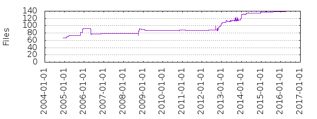

Files
- Total files
- 139
- Total lines
- 411314
- Average file size
- 87657.36 bytes
| Extension | Files (%) | Lines (%) | Lines/file |
|---|
| 13 (9.35%) | 4345 (1.06%) | 334 |
| ac | 1 (0.72%) | 235 (0.06%) | 235 |
| am | 10 (7.19%) | 353 (0.09%) | 35 |
| c | 50 (35.97%) | 163460 (39.74%) | 3269 |
| cin | 2 (1.44%) | 26196 (6.37%) | 13098 |
| cmake | 1 (0.72%) | 207 (0.05%) | 207 |
| dat | 6 (4.32%) | 78 (0.02%) | 13 |
| h | 28 (20.14%) | 10378 (2.52%) | 370 |
| in | 4 (2.88%) | 173 (0.04%) | 43 |
| m4 | 2 (1.44%) | 835 (0.20%) | 417 |
| md | 2 (1.44%) | 442 (0.11%) | 221 |
| patch | 1 (0.72%) | 44089 (10.72%) | 44089 |
| py | 4 (2.88%) | 197 (0.05%) | 49 |
| sh | 6 (4.32%) | 270 (0.07%) | 45 |
| src | 2 (1.44%) | 158045 (38.42%) | 79022 |
| tab | 2 (1.44%) | 234 (0.06%) | 117 |
| texi | 1 (0.72%) | 1193 (0.29%) | 1193 |
| txt | 3 (2.16%) | 520 (0.13%) | 173 |
| yml | 1 (0.72%) | 65 (0.02%) | 65 |